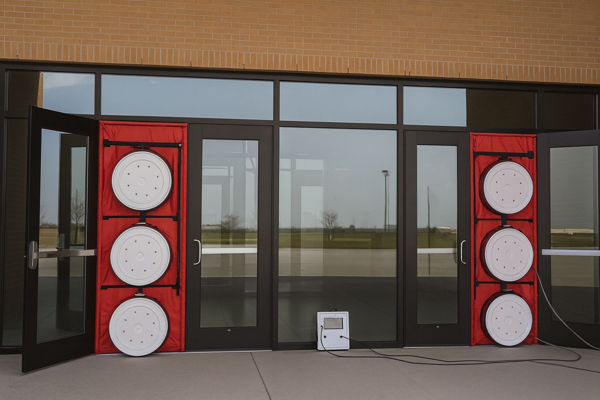

Building Air Tightness Testing Services
Building air tightness testing measures the rate of air leakage through a building envelope by depressurizing or pressurizing the interior space using calibrated testing equipment.
Our building air tightness testing services are available for both new and existing buildings, including residential homes, as well as commercial, industrial, institutional, and mixed-use buildings.
We provide professional building air tightness testing with a detailed, official report to support a wide range of applications, including:
- Toronto Green Standard (TGS) compliance
- ENERGY STAR® certification
- LEED® certification
- Ontario Building Code (OBC) requirements
- National Energy Code for Buildings (NECB) compliance
- Energy modeling and commissioning processes
- Retrofit and air-sealing projects
- Customized project-specific applications
We work closely with our clients to tailor our testing services to the specific needs and requirements of each project.
Frequently Asked Questions
Building Air Tightness Testing (often called a blower door test) is a professional assessment that measures how much outside air leaks into a building through gaps, cracks, and unintended openings in the structure. The goal is to determine how “tight” or “drafty” a building is, and whether it meets energy‑efficiency and performance standards.
A standard Building Air Tightness Test (blower door test) typically takes 1 to 2 hours for most residential homes. This includes setup, testing, diagnosing leakage areas, and reviewing the results.
For larger homes, multi‑unit buildings, or commercial spaces, the process can take 2 to 4 hours or more, depending on:
- The size and layout of the building
- How many exterior doors and levels need to be tested
- Accessibility of key areas (mechanical rooms, attic hatches, etc.)
- Whether the client wants a basic test or a more detailed diagnostic assessment
We always provide an estimated timeframe before starting so homeowners, builders, contractors, and property managers can plan accordingly.
This provides a clear picture of the building’s overall airtightness and identifies areas where energy loss, drafts, or moisture problems may occur.
This type of testing is valuable for homeowners, buyers, builders, contractors, and property managers because it verifies how well the building envelope is performing — something that directly affects comfort, energy bills, indoor air quality, and long‑term durability.
It’s one of the most reliable ways to understand how well a building is sealed and where improvements can be made.
You’ll receive a detailed, easy‑to‑understand report summarizing the test results, leakage rate, and any recommended upgrades. This documentation is valuable for homeowners, builders, contractors, and property managers who need proof of performance or compliance.